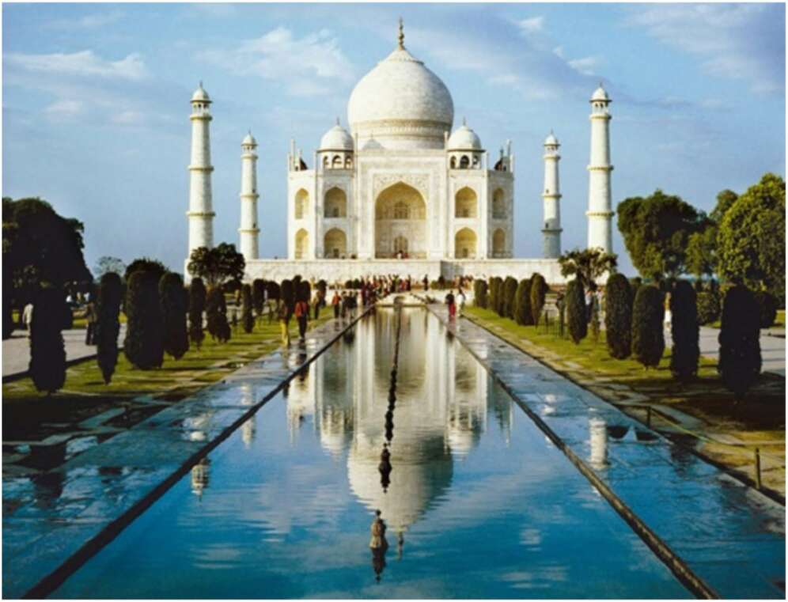

29. The Taj Mahal. An example of ‘authentic’ Indian culture, or the alien creation of Muslim imperialism? Even if we were to completely disavow the legacy of a brutal empire in the hope of reconstructing and safeguarding the ‘authentic’ cultures that preceded it, in all probability what we will be defending is nothing but the legacy of an older and no less brutal empire. Those who resent the mutilation of Indian culture by the British Raj inadvertently sanctify the legacies of the Mughal Empire and the conquering sultanate of Delhi. And whoever attempts to rescue ‘authentic Indian culture’ from the alien influences of these Muslim empires sanctifies the legacies of the Gupta Empire, the Kushan Empire and the Maurya Empire. If an extreme Hindu nationalist were to destroy all the buildings left by the British conquerors, such as Mumbai’s main train station, what about the structures left by India’s Muslim conquerors, such as the Taj Mahal? Nobody really knows how to solve this thorny question of cultural inheritance. Whatever path we take, the first step is to acknowledge the complexity of the dilemma and to accept that simplistically dividing the
